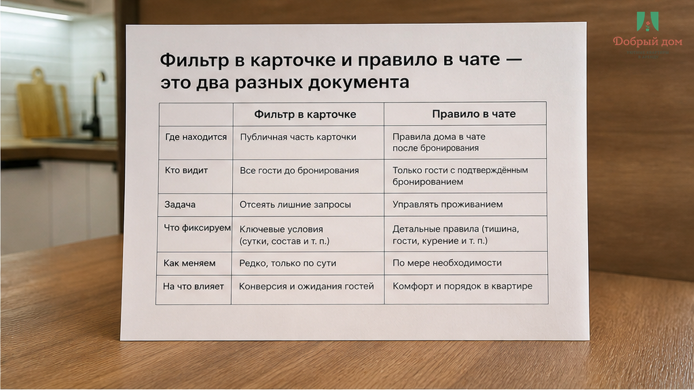
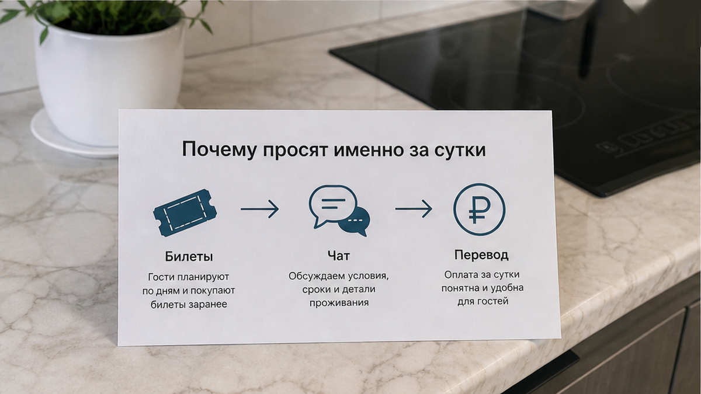
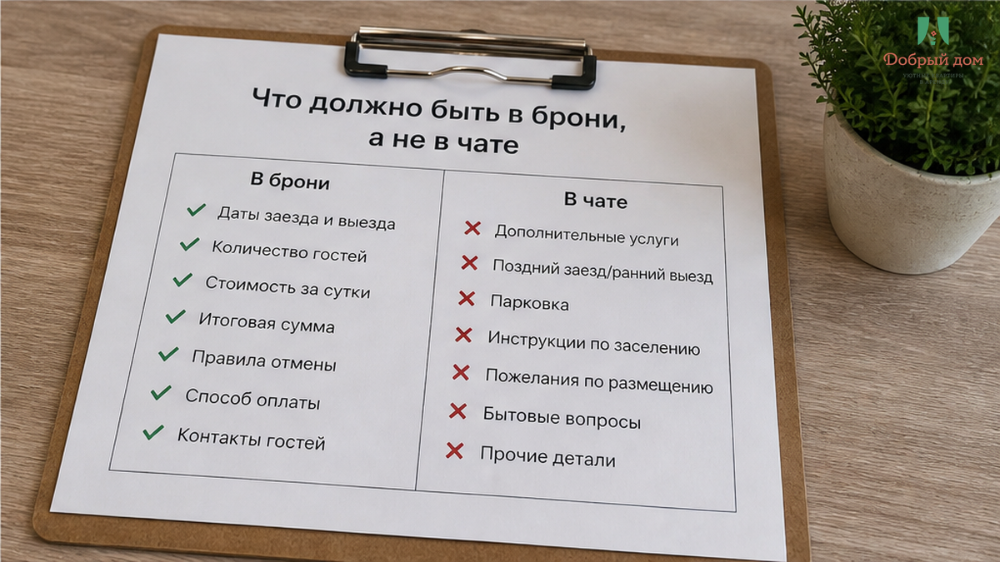
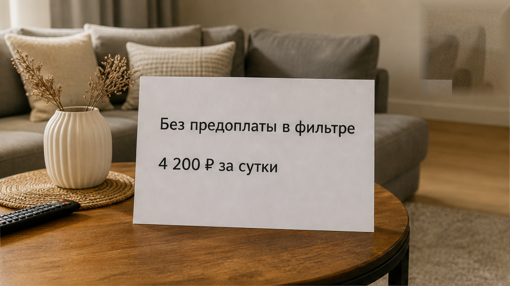
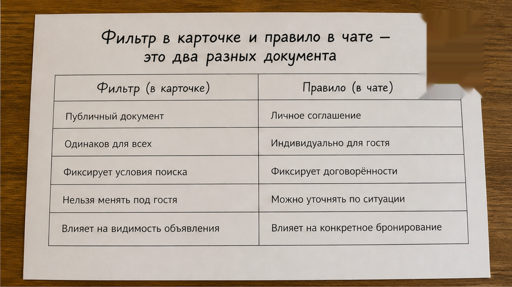
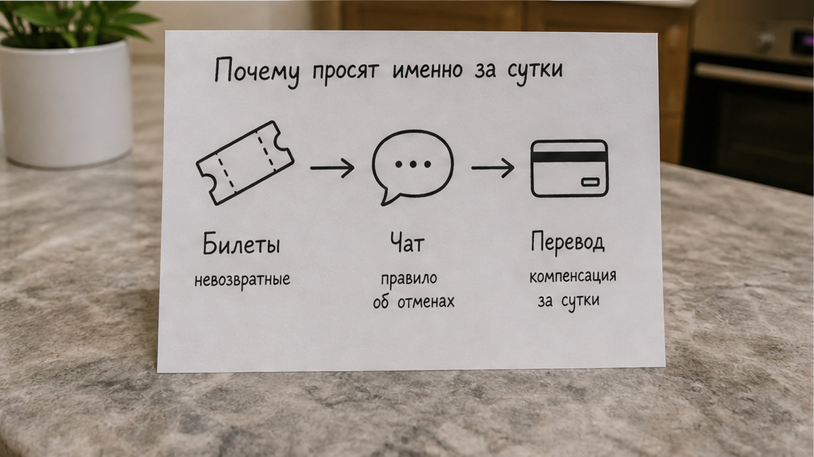
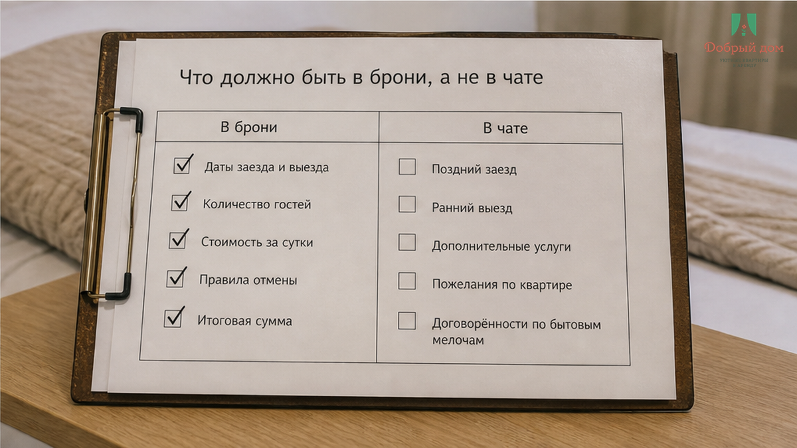

«Переведите 50% — 4 200 ₽ на СБП. Иначе бронь снимаем.» Сообщение пришло за сутки до заезда — в чат, где до этого не было ни одного слова про предоплату. Двое суток, 8 400 ₽, в поиске стоял фильтр «без предоплаты», именно по нему квартира и нашлась. Билеты на поезд уже куплены. До заезда меньше дня.
Гость спросил простое: где это было написано. В ответ получил две знакомые фразы: «так у всех» и «комиссия площадки». И вот здесь фильтр перестаёт быть обещанием. «Без предоплаты» в карточке — это не гарантия, а отметка, которую хост поставил сам. А потом может обойти её вручную, через чат, вне брони. За сутки до поезда это уже не просьба о деньгах. Это расчёт на то, что человеку некуда отступать.
Я хост посуточной в Тюмени. Это «Добрый дом». Мы отвечаем в Telegram и в MAX, и такие переписки нам присылают чаще, чем хотелось бы. Сначала гость уверен, что жильё найдено. Потом в чате появляется карта для СБП. Потом деньги уходят — а бронь внезапно начинает жить отдельно от человека, который её оплатил.

Когда вы ищете квартиры посуточно в Тюмени и включаете «без предоплаты», вы смотрите витрину. Витрина нужна, чтобы выбрать вариант. Но условия сделки живут в подтверждённой брони: в её тексте, правилах отмены, указанной сумме и способе оплаты.
Если в брони про предоплату нет ни слова, а в чате она вдруг появилась, правила не уточнили. Включили рычаг. Сначала человек выбирает по фильтру. Потом ему говорят: «Так у всех». Потом присылают номер для перевода. Каждая фраза по отдельности выглядит почти бытовой. Вместе они выводят деньги за пределы брони — туда, где площадка не видит оплату, не фиксирует условие и не может разбирать спор как часть заказа.
Формально вы перевели деньги. Фактически — отправили их физлицу и теперь надеетесь, что оно выполнит обещание. Последствия у таких историй всегда одинаково неприятные: перевели 3 000 предоплатой — и к вечеру в чате тишина. Суть не в 3 000 и не в 4 200 ₽. Суть в том, что после перевода у гостя остаётся не бронь с зафиксированной оплатой, а просьба ответить на сообщение.
А «комиссия площадки» — не объяснение, которое должно успокоить. Это честный сигнал, что хосту неудобно принимать оплату там, где она остаётся видимой. Когда деньги проходят через сервис, остаётся след: сумма, дата, условие. Вне него остаётся только перевод и переписка.

Не потому, что именно сегодня внезапно понадобились деньги. И не потому, что технически нельзя было сказать об этом раньше. За две недели до поездки человек спокойно ответит: «Нет, я выберу другой вариант». За сутки у него уже билеты, собранная сумка, маршрут до дома, понимание района и даты в голове. Альтернативы либо дороже, либо дальше, либо уже заняты.
В этой точке 4 200 ₽ выглядят не как риск, а как цена за возможность не начинать всё сначала. На это и работает сообщение «иначе бронь снимаем». Не на доверие — на нехватку времени.
Та же логика появляется в других местах дороги. В карточке обещают одно, а доплата возникает тогда, когда человек уже едет: хозяин сказал «всё включено», а в такси доплатили 2 400. Или гость приезжает и слышит про условие, которого в брони не было: стиральная в карточке и залог при заселении. Суммы и поводы разные. Момент один: когда отказаться уже дороже, чем согласиться.

Сама предоплата не делает хоста плохим. Она бывает: длинные даты, отмены, простой квартиры — это реальная экономика посуточной аренды. Но нормальная предоплата не появляется из ниоткуда после подтверждения. Она понятна до брони, видна в условиях и не требует отдельного перевода «на карту, а потом всё отметим».
В такой ситуации не нужно спорить о том, как принято у всех. Есть один вопрос, который быстро отделяет условие от давления:
Где в переписке и в брони зафиксировано, что предоплата обязательна, куда уходит сумма и что при отказе?
В нём три части, и ни одну не стоит пропускать. «Зафиксировано» — значит написано в тексте брони, а не сказано голосовым. «Куда уходит» — значит понятно, как платёж связан с заказом, а не просто прислан номер карты. «Что при отказе» — значит есть конкретный ответ: полный возврат, удержание первой ночи или невозвратная сумма.
Если хост спокойно даёт это письменно, разговор становится предметным. Если вместо ответа снова звучит «так у всех», ответ уже получен. Не про рынок. Про то, что условия не готовы выдержать простой вопрос гостя.



И не отправляйте заодно то, что не относится к подтверждённому заселению: скан паспорта в чат, селфи с документом, код от домофона «после перевода». История, где фото паспорта отправили, а код так и не прислали, не выглядит редкостью для того, кто читает такие обращения регулярно. У нас документы смотрят лично при заселении. Они не должны уезжать в чужой мессенджер ради обещания прислать код.
И вот спорный вопрос, на котором мы с коллегами иногда расходимся: если в карточке стоит «без предоплаты», а потом в чате просят перевод — это нормальная рыночная практика или нарушение собственных условий? Мы считаем, что первое здесь не работает. Как вы думаете? Напишите в Telegram или MAX — там такие случаи можно разобрать по-человечески, пока поезд ещё не ушёл.

У нас этот разговор заканчивается коротко. Если гостю предлагают перевести деньги на личную карту вне брони и объясняют это комиссией, мы говорим: нет. Так не заселяем. Ни за половину суммы, ни за полную предоплату вперёд.
Сначала должна быть проверка условий. Потом деньги. Не наоборот. Потому что сделка, которую невозможно подтвердить, плоха для всех: гость остаётся без гарантии, хост — без нормального документа и понятного расчёта.
Наш вывод простой. Квартиру посуточно снимают не по фильтру, а по тому, что написано в брони. Фильтр — витрина. Бронь — договор. А перевод на чужую карту за сутки до поезда — не оплата с гарантией, а надежда. Мы предпочитаем работать так, чтобы гостю не приходилось надеяться: сначала видны условия, потом происходят деньги.
Если нужны квартиры посуточно в Тюмени с понятными условиями заселения — пишите: Telegram · MAX · сайт добрыйдом-72.рф и раздел брони · телефон +7 993 574-83-22 · менеджер @Dobriy_dom_Tyumen.